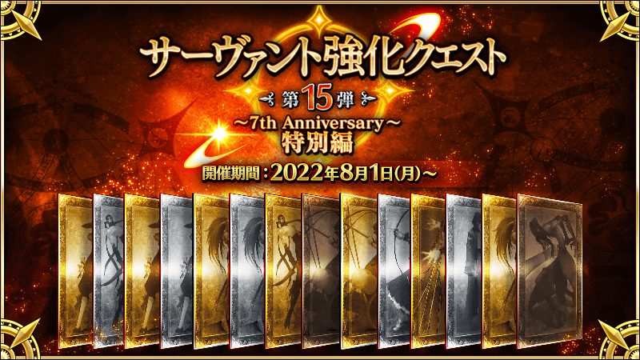
舉辦強化從者能力的特別關卡「從者強化關卡」的第15彈！
本次為了記念「Fate/Grand Order ～7th Anniversary～」的舉辦，合計14位從者的強化關卡永久追加！
對象從者的強化關卡連續7天在迦勒底之門開放。
另外，不僅進行對象從者的強化，也可獲得聖晶石做為關卡通過報酬。
※從者強化關卡請注意在沒有文字冒險部份。
◆追加時間◆
2022年8月1日(一) 17:00～
◆開放條件◆
持有的強化對象從者，必須使其最終再臨。
※未持有對象從者的話，不會出現關卡。
※關卡沒有舉辦期限。
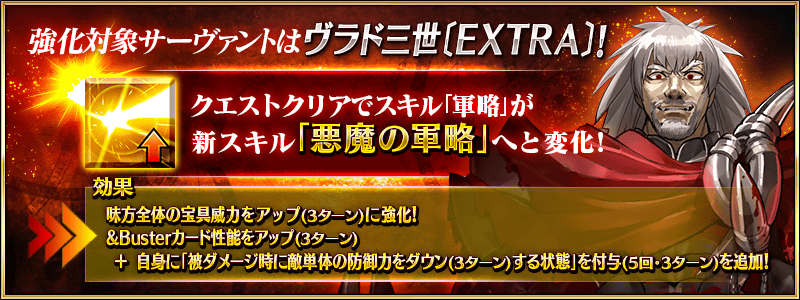
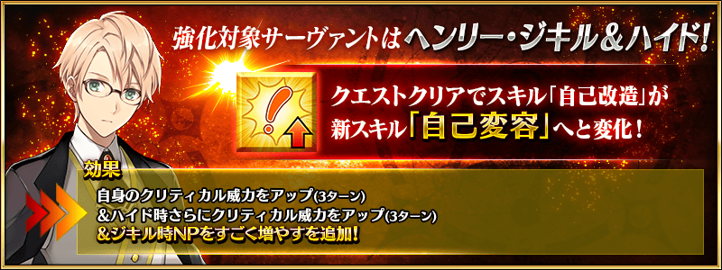
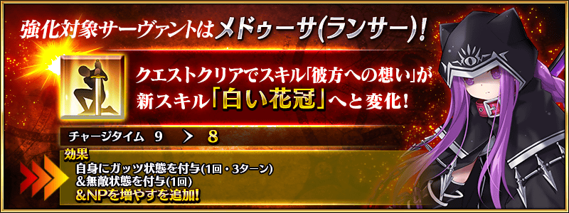
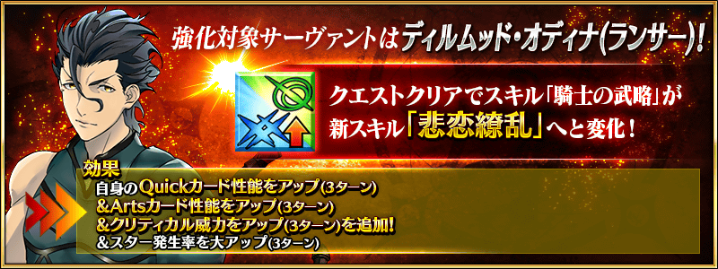
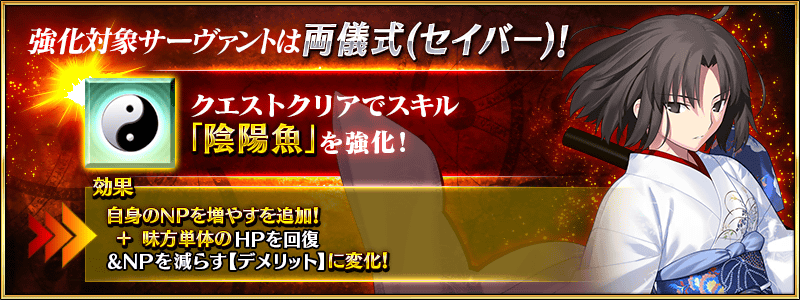
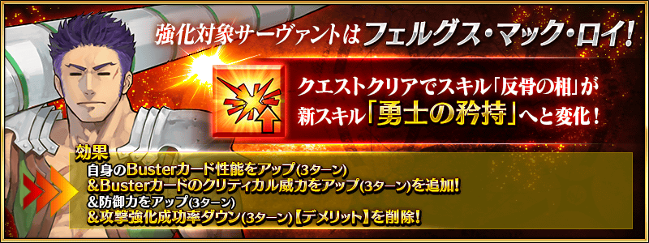
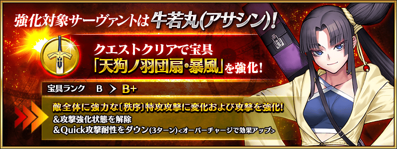
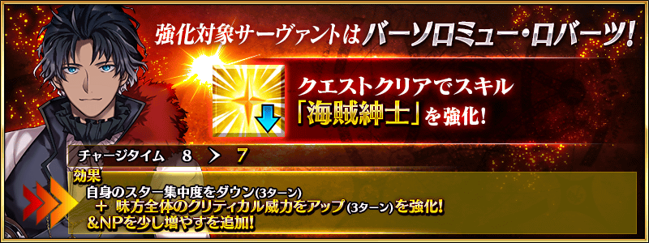
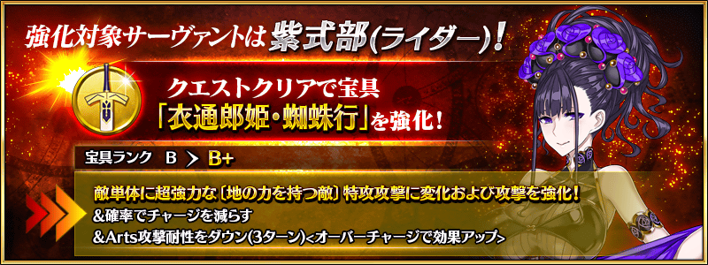
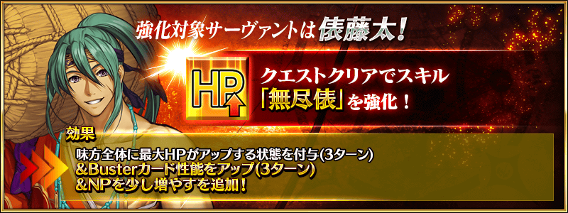
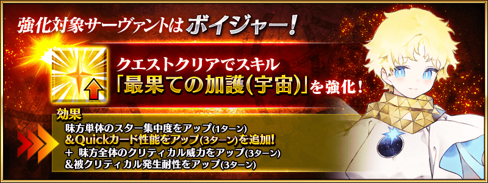
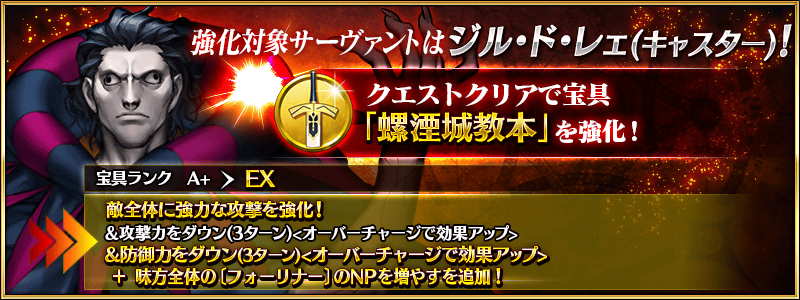
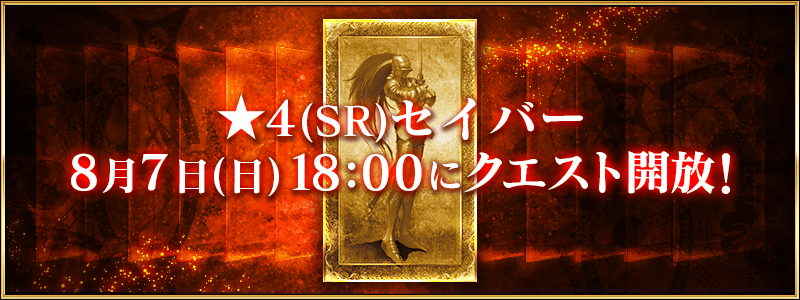
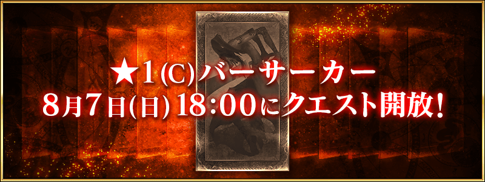
【8月3日(三) 17:00追記】
其他還有，
・Fate/Grand Order ～7th Anniversary～
・7周年記念 Archetype:Earth Pick Up召喚
・7周年記念福袋召喚(職階別20劃分)
・7周年記念限定從者每日交替Pick Up召喚
以期間限定舉辦中！
關於詳情，請自下述橫幅確認。
■「Fate/Grand Order ～7th Anniversary～」詳細情報

■「7周年記念 Archetype:Earth Pick Up召喚」詳細情報

■「7周年記念福袋召喚(職階別20劃分)」詳細情報

■「7周年記念限定從者每日交替Pick Up召喚」詳細情報